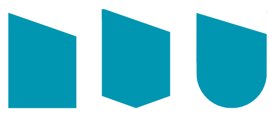
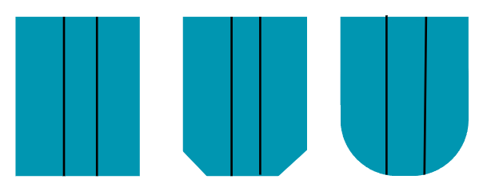
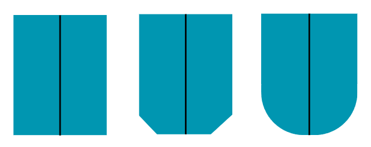
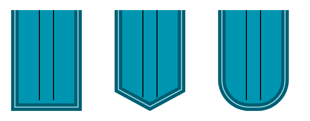
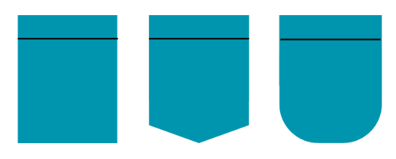

Guide des options
Une poche plaquée (ou poche appliquée) est une pièce de tissu cousue sur l'extérieur d'un vêtement : les bords sont repliés, puis la poche est surpiquée sur trois côtés.
Bas de poche
Rectangulaire, angles coupés (chanfrein) ou angles arrondis.

Entrée de poche
Droite (horizontale) ou biseautée (inclinée, avec un angle).


Soufflets
3 possibilités :
- Un soufflet latéral : bande sur les côtés et le fond.
- Un soufflet central : soufflet extérieur ou soufflet intérieur (invisible).
- Double soufflets : latéral et central.



Revers
Revers : retour de tissu en haut de poche, vers l'extérieur ou vers l'intérieur. Retourné vers l'intérieur, le revers est invisible.
- Poches sans soufflet et à soufflet latéral : le revers est intégré à la face avant (une seule pièce).
- Poches à soufflet central et à double soufflets : le revers n'est pas intégré, c'est un revers rajouté (pièce séparée).


Rabat
Rabat : pièce qui recouvre l'entrée de poche, droit ou incliné, surpiqué ou inséré. Un rabat peut s'associer à tous les modèles de poche. Comme le bas de poche, le rabat peut être rectangulaire, à angles coupés ou à angles arrondis. Le choix d'un type de rabat est indépendant du type de poche choisi.
Glossaire français → anglais
- Poche plaquée (ou poche appliquée) : patch pocket
- Soufflet latéral : side gusset
- Soufflet central : center pleat
- Soufflet extérieur : box pleat
- Soufflet intérieur (invisible) : inverted pleat
- Double soufflets : double gusset
- Revers : turn-back hem
- Rabat : pocket flap
- Entrée biseautée : slanted opening
- Angles coupés : cut corners
- Angles arrondis : rounded corners